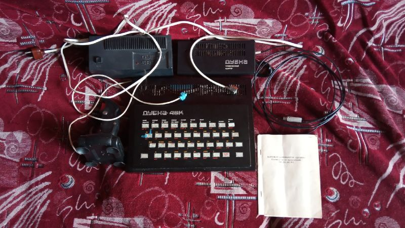

| Годы производства | С 1987-1988 года по первой половины 1990-ых? |
| Производился | Приборный Завод "Тензор" |
| Процессор | 80A-CPU (аналог Z80 производства ГДР) |
| Частота | 1,875 МГц |
| Скорость | 50% |
| ОЗУ | 48КБ |
| ПЗУ | 16КБ |
| Преемущества | Качественное изображение, удобный джойстик, длинные провода подключения, кодировка изображения в SECAM. |
| Недостатки | Нестандартные разъемы для подключения питания, джойстика и адаптера для телевизора, замедление в 2 раза примерно половины игр, со временем рассыпающаяся клавиатура, невозможность загрузить игры с собственным загрузчиком, забыли вывести на заднюю панель слот для периферии. |
Бытовой Компьютер Дубна 48к
Дубна 48к - один из ранних промышленно выпускаемых отечественных клонов ZX Spectrum 48k с собственным названием( до этого часто были клоны с названием ZX Spectrum, но внутри были разные варианты исполнения платы к примеру - Львовский, Балтийский, Московский, Ленинградский, Краснодарский варианты ). Выпускался заводом "Тензор" в подмосковном городе Дубна. Тираж неизвестен. В нашем музее представлен вариант в черном металлическом исполнении с серийным номером 3004 он был выпущен в марте 1991 года. Был продан в 1991 году по цене в 455 советских рублей, что для 1991 года было всё еще достаточно большой суммой.Комплектация данного компьютера полная:
КоробкаКомпьютер
Блок питания
Телевизионный адатер с кодировкой SECAM
Руководство пользователя
Джойстик
Кабель для подключения к магнитофону
Принципиальные схемы
Основная информация:
Клон был разработан в 1987-88 годах на заводе "Тензор". В качестве процессора используется аналог Z80 производства Восточной Германии - 80A-CPU с пониженной тактовой частотой. Ходили слухи, что эти процессоры были остатками от военпрома, партия которых была куплена подешевле, но увы где я это прочитал или услышал я уже не помню. Самое интересное заключается в том, что тактовая частота процессора - 1,875 МГц, что ровно в два раза меньше чем у оригинального ZX - 3,5 МГц. Это серьезно отразилось на внутреннем содержимом клона, разработчикам даже пришлось изменить прошивку ПЗУ для того чтобы считывание программ с кассет не пострадало, но при этом многие программы которые были испробованы на этой версии Спектрума работали почти в два раза медленней. А некоторые не запускались вовсе, в частности игры имевшие собственный загрузчик.Вероятно клон имеет раздельные поля памяти, т.к. используются два вида микросхем памяти РУ5 и РУ6.
Компьютер имел целых три цвета оформления - черный, серый и желтый, а также клон мог быть в двух вариантах исполнения - в железном или в пластиковом. В нашем случае - мы имеем черный вариант в железном исполнении.
Внешний дизайн клона пытается копировать оригинальный ZX, но корпус сделан из железа, имеет отверстия сверху, размер корпуса побольше.
Компьютер имеет герконовую клавиатуру, где некоторые надписи переведены на русский язык, а расположение кнопок идентично обычному ZX Spectrum 16/48k.
На обратной стороне имеет следующий разъемы:
Первое что надо сказать - слоты, кроме магнитофонного, используют штекеры и разъемы от советского военпрома - нестандартные, а посему в случае утраты комплектных блока питания или кодера это довольно фатальная потеря.Выход - видеовыход для подключения к телевизору или монитору.
5В - как можно понять, в этот разъем подключается блок питания на 5 вольт.
ПУ - Пульт Управления - сюда подключается джойстик, в данном случае это Kempston.
Дальше пустота, но об этом чуть дальше.
МФ - Выход и вход для обычного кассетного(или бобинного) магнитофона.
Сброс - Аппаратный сброс соответственно.
А теперь насчет вот этой интересной пустоты, там через отверстия виден некий синий слот. Я так предполагаю для расширения, но непонятно только почему его забыли вывести наружу, или это вообще не предполагалось делать? Остается только догадываться.
Клон имеет модернизированную прошивку, при включении выдается надпись (с) Dubna 1988 и сама прошивка также работает медленнее.
Звук с клона выводится на телевизор.
Блок питания сделан в пластиковом корпусе, как ни странно, и выдает 5 вольт, имеет у себя длинные провода, что очень удобно. Также в корпусе есть два предохранителя, диод и кнопка включения.
Кодер изображения сделан в металлическом корпусе, имеет длинные провода и кодирует RGB изображение в высокочастотный сигнал стандарта SECAM, что является большим плюсом, т.к. оригинал выдавал изображение в PAL.
Имелся также мануал, в котором идет руководство пользователя, гарантийный талон и принципиальные схемы. Опять таки три в одном своеобразный.
С собой также имелся обычный DIN5 кабель для подключения магнитофона к компьютеру.
И последнее что было с собой - джойстик типа Kempston, он потребовал небольшого ремонта т.к. там отошел один из проводков и его нужно было подпаять. Это не составило большого труда - он был приведен в рабочее состояние.
Комплектующей кассеты с собой не предусматривалось, даже в мануале написано что её не должно было быть.
Сам же клон имеет неплохую совместимость с оригиналом, однако как уже было сказано некоторые игры работают нормально, некоторые в два раза медленнее, а некоторые просто не грузятся.
Ссылки:
https://www.youtube.com/watch?v=D-ljA5qoZLw - Видеообзор этого клона автором статьи. Обзор снимался 4 года назад, так что могут быть неточности + некоторой информации может не быть.http://superbrain1997.blogspot.com/2016/09/superbrain1997-48.html - Более подробный осмотр данного клона, писался тоже достаточно давно, возможно будет обновлен и дополнен в дальнейшем.